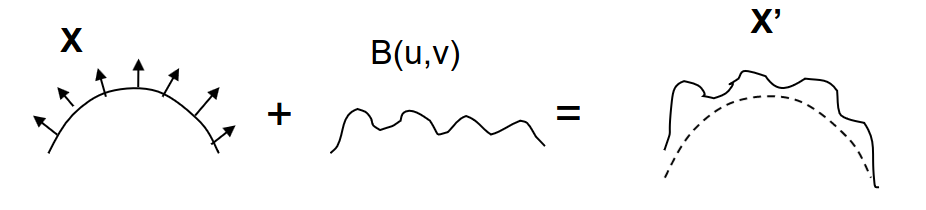
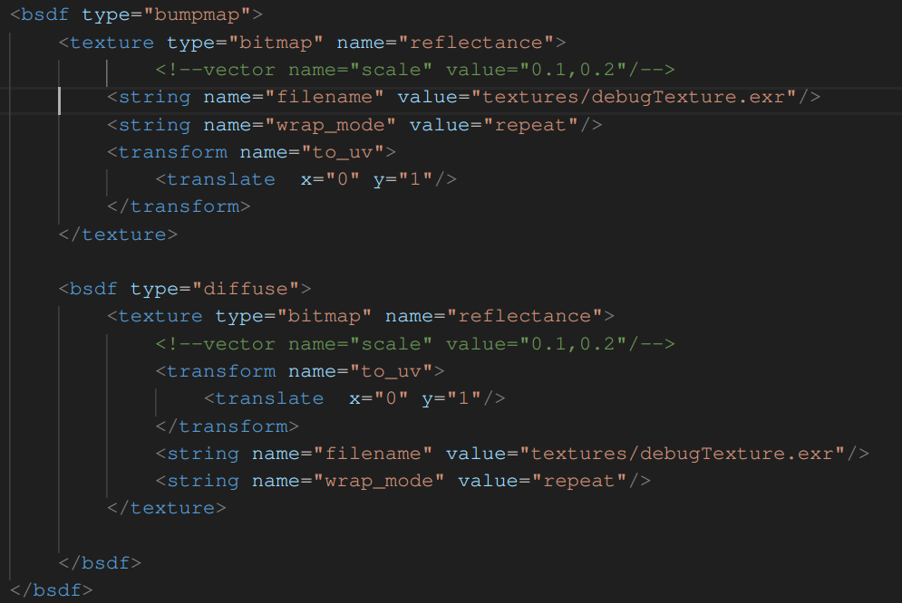
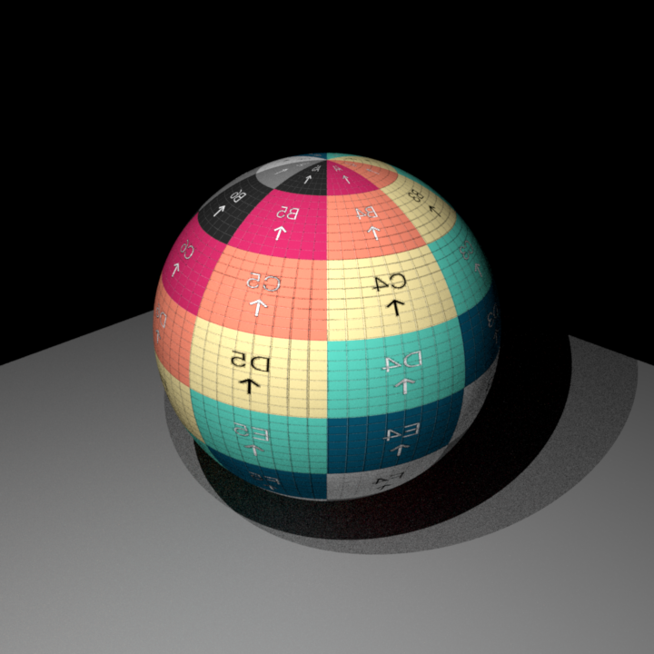
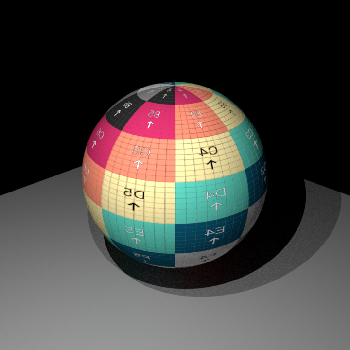
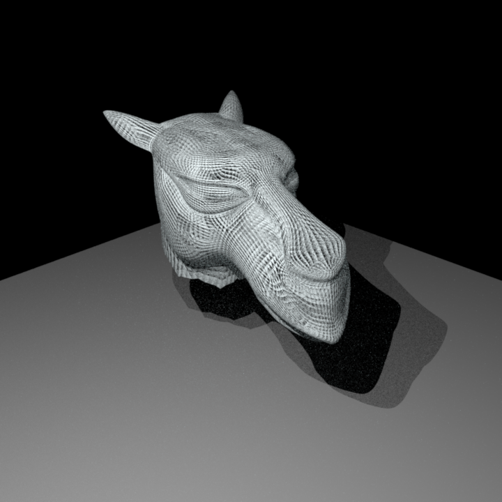

# Introduction
Bump Mapping is a great feature to add texture and perspective to meshes without having to add polygons to the meshes. A bump map can be considered as a BSDF that has pointers to a displacement map (a texture, usually an image texture), and a nested bsdf.
The displacement map will determine how the shading normal of our mesh will be modified, whereas the nested BSDF determined the way the light is reflected off the surface.

This diagram was found in the following slides from Ohio State University. *B* represents the displacement from the given texture.
When it comes to the calculations, as shown in the PBRT chapter on Bump Mapping, the displaced surface is given by :
$$
p'(u,v) = p(u,v) + d(u,v)n(u,v)
$$
With $p$ the parameterization from the $(u,v)$ coordinates to the points on the mesh, $d$ the displacement and $n$ the surface normal prior to the interaction.
We use the chain rule to derive the partial derivatives function that will help for the implementation :
$$
\frac{\partial p'}{\partial u} = \frac{\partial p}{\partial u} + \frac{\partial d}{\partial u}n(u,v) + d(u,v)\frac{\partial n}{\partial u}
$$
Seeing as the term $\frac{\partial n}{\partial u}$ is small it is negligeable in the implementation.
Moreover, to esimate the gradient of the displacement I use the following formula :
$$
\frac{\partial d}{\partial u} = \frac{d(u + \epsilon, v) - d(u - \epsilon, u)}{2*\epsilon}
$$
$$
\frac{\partial d}{\partial v} = \frac{d(u, v + \epsilon) - d(u, u - \epsilon)}{2*\epsilon}
$$
These calculations will allow us to update the shading frame of our BSDF. We have that $$n' = \frac{\partial p}{\partial p} \times \frac{\partial d}{\partial v}$$
Once that is done, We simply need to sample the nested BSDF with $w_i$ casted into the updated frame.
# Implementation
The implementation for this feature can be found in the class `bumpmap.cpp`. It is a class that inherites from `BSDF` and contains the following methods and attributes :
**Attributes**
- `m_displacement` : pointer to a texture that will define our bumping
- `m_nested` : pointer to a BSDF that describes how light bounces off the surface
**Methods**
- One constructor : does nothing
- One destructor : takes care of deleting the two pointers in the attributes
- `addChild` : initialises the displacement and nested attributes
- `activate` : Checks that the necessary children have been assigned. If no BSDF has been given then initialize a diffuse BSDF
- `getFrame` : From the intersection fram it calculates the displaced normal and frame as mentioned above
- `eval` : gets the new frame with `getFrame` then calls the nested eval method on the bRec in the transformed Frame
- `pdf` : gets the new frame with `getFrame` then calls the nested pdf method on the bRec in the transformed Frame
- `sample` : gets the new Frame then samples $w_o$ by calling the sample method of the nested frame on the bRec transformed into the displaced frame
- `toString` : returns a human readable string method
**getFrame**
Note : I modified slightly `BSDFQueryRecord` so that it can also store the Intersection instance which is useful for setting the new frame.
This method was a struggle for me to grasp as I couldn't figure out how to do the inverse parameterization $p(u,v) = (x,y,z)$ of Shapes. I added in the `Shape` class a `UVtoPoint` method where the idea was to return the point on the mesh associated to the (u,v) point given. I succesfully implemented this method in `sphere.cpp`, but had a harder time in `Mesh.cpp`. I wanted to use this method to return $p(u + \epsilon, v)$ and $p(u, v + \epsilon)$ in order to calculate the gradient, but even doing tests on the sphere where I implemented this method correctly, the results were not better that anothe simpler conceptualization I found for this class that I explain below. I acknowledge that it isn't the ideal way to implement bumpmapping but it seems to works decently for my meshes.
The implementation of the method goes as follows :
- Estimate the partial derivatives of the texture $\frac{\partial d}{\partial u}$ and $\frac{\partial d}{\partial v}$ as explained above
- Calculate the displacement in the $\frac{\partial d}{\partial u}$ and $\frac{\partial d}{\partial v}$ directions like so :
$$\frac{\partial p'}{\partial u} = \vec{s} + \vec{n}\frac{\partial d}{\partial u}$$ $$\frac{\partial p'}{\partial v} = \vec{t} + \vec{n}\frac{\partial d}{\partial v}$$
Theses formulas aren't always correct because $\vec{s}$ and $\vec{t}$ will not always be aligned with the parameterization gradients $\frac{\partial p}{\partial u}$ and $\frac{\partial p}{\partial v}$. But the rest of this method should be correct
- Calculate $\vec{n'}$ as the cross product between the two new vestors calculated above (this will always be correct despite the modified formulas as the two sets of vectors are always going to be in the same plane)
- Set $\vec{s'}$ and $\vec{t'}$
- Ceck that the old and new normal are indeed pointing in the same direction
- return the frame
# Results and Validation
The way to set up a bumpmapped texture in xml is the following :

Had I had more time I would have loved to find a way to add and id to a texture in order to be able to reference it instead of having to write it out twice as I do above.
Below are my results for bumpmapping. These scenes can be found in `scenes/bumpmap`
**Comparison to Mitsuba**


**Comparison to texture**

Dispite my render being slightly different than mitsuba, it still gives the impression of bumps. The difference arise, in my opinion, from two different factor :
1. Difference in the calculation of $\frac{\partial p'}{\partial u}$ and $\frac{\partial p'}{\partial v}$
2. Mitsuba likely has a more accurate way of calculating the derivative. In fact if I change up my value for $\epsilon$ the result changes as well, which shows it is not the most precise way to define the gradient (although this formula is still used in the field of Computer Vision quite often for calculating image gradients)